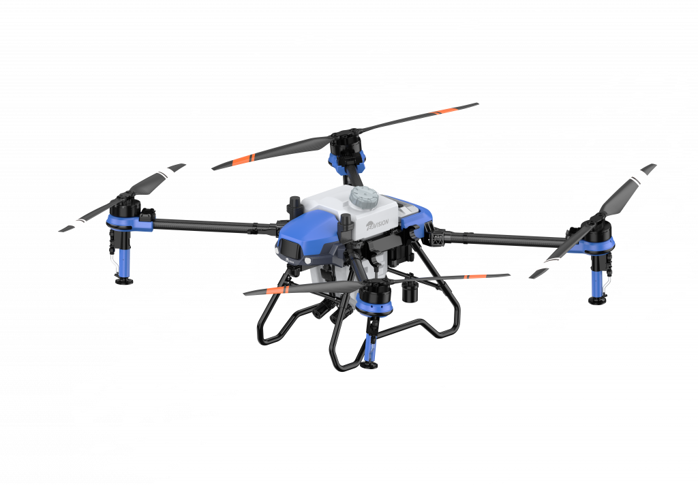

Farm Marshal
Access
Enter the passphrase issued with your invitation.
This is not authentication. The deck is a static site, so every file is retrievable by anyone with the URL regardless of this form. The passphrase deters casual forwarding and records an acceptance step — nothing more. For genuine restriction, place the site behind an authenticating proxy.